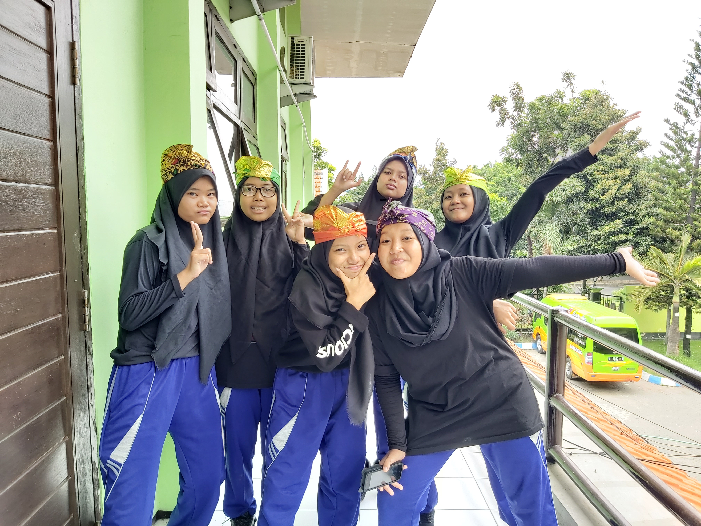
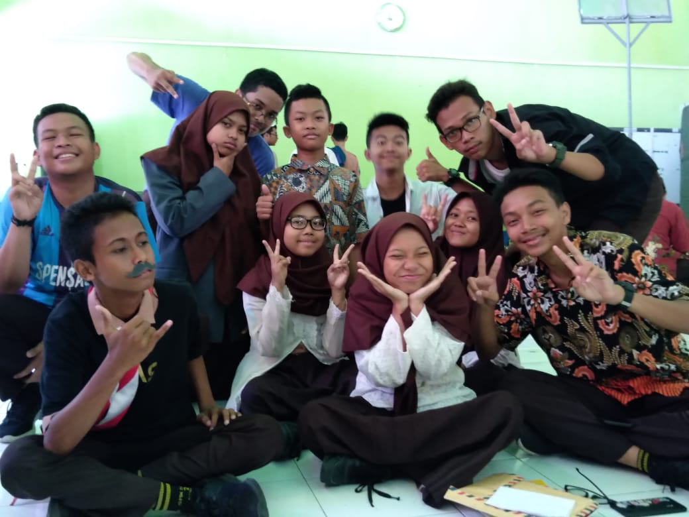
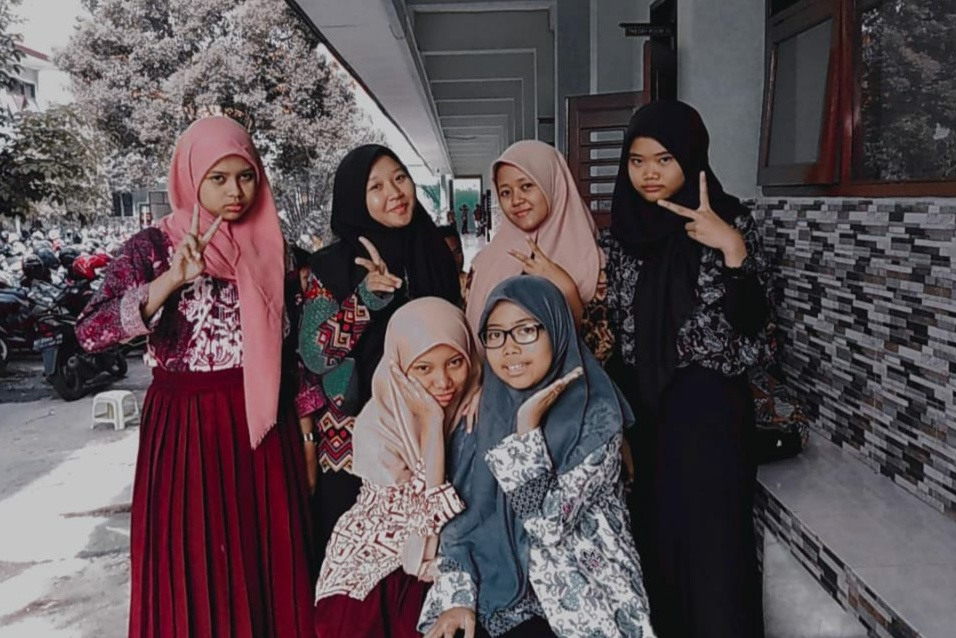
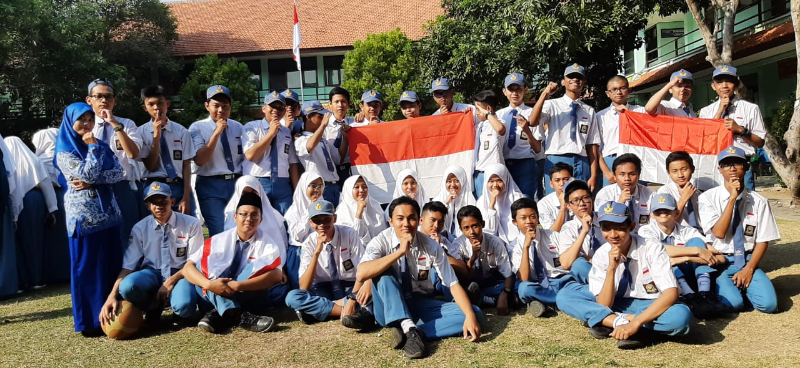

Ini tahun kedua ku bersekolah di smenda, dan tahun kedua ku belajar
mengenai dunia it, aku banyak mendapat ilmu baru dari banyak orang,
dan teman temanku. Tahun pertama ku pada waktu kelas x hanya diisi
selama 7 bulan pembelajaran penuh di sekolah, sisanya aku mendapat
pembelajaran online karena terdapat wabah corona di indonesia. Aku
dan teman- teman juga merasa sangat jenuh, kami rindu sekolah, rindu
bergurau dengan teman-teman, rindu keramaian mereka di sekolah, kami
harap wabah ini cepat berakhir.
Di jurusan ini aku sudah memahami beberapa hal, seperti membuat web,
mecoba program sederhana, belajar pascal, belajar cpp, awalnya
memang tidak terlalu mudah, karena masih dalam adaptasi, dan
sekarang sedikit banyak aku sudah mempelajari beberapa.

Di kelasku mayoritas adalah siswa laki, kenapa? karena di it
kebanyakan pndaftar adalah laki, jadi di kelasku ada 36 siswa,
terdiri dari 30 siswa laki dan 6 siswa perempuan, di kelas kami,
kami merasakan solidaritas antar kami, mereka sering melakukan hal
dan tingkah konyol yang kadang membuat jengkel dan lucu dalam waktu
yang bersamaan. Dan apabila kita keluar kelas, kita selalu berenam,
ketawa bersama, jajan bersama, bercerita satu sama lain.



